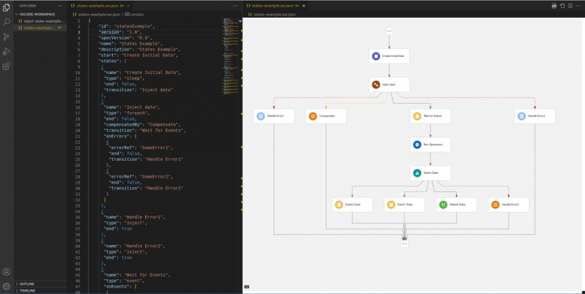
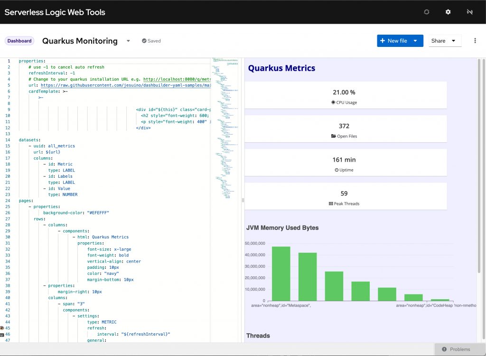
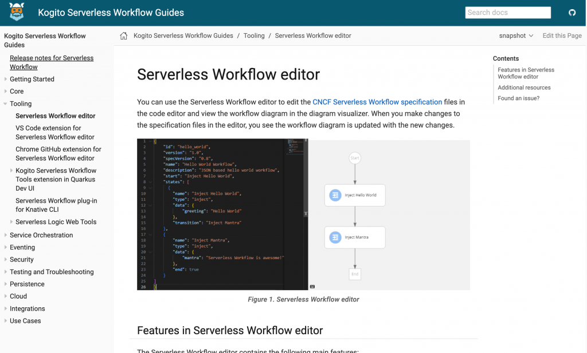

KIE Tools Highlights – Q3
Some days ago, we just launched KIE Tools 0.23.0 and wrap-up the deliverables of our team for the third quarter. The main goal of this milestone was to expand the Serverless Workflow tooling to provide the best developer experience for the Serverless Logic ecosystem, with highlights to the new Serverless Workflow visualization!
This post will give a quick overview of the most important deliverables of this quarter. I hope you enjoy it!
Modernize Serverless Workflow Visualization
In partnership with Red Hat UX Team, we are happy to announce that we just released a new diagram visualizer for the Serverless Workflow based on Stunner.

This new visualization improves the user experience authoring Serverless Workflows, with a much better look and feel, and a lot of additional features like state navigation, error handling, and automatic workflow reloading. See this blog post for full details.
Serverless Workflow plug-in for Knative CLI
Serverless Workflow provides a plug-in named kn-plugin-workflow for Knative CLI, enabling you to quickly set up a local workflow project using the command line. See our docs for more information.
Our plug-in is now included by default in the Red Hat OpenShift Serverless client, allowing users of this CLI to create and use workflow commands without the need to install any additional plug-in.
Custom Dashboards on Dev UI
Besides our default Dashboard on Quarkus Dev UI, users now can have custom dashboards based on Dashbuilder. Check out this video:
Dashbuilder samples
Almost every week, we push new samples from our Dashbuilder samples repository. This month’s highlight is William’s post , which allows us to visualize data from Quarkus or even embed dashboards in my Quarkus application.

You can check it running live here.
Kogito Serverless Workflow Guides
Our team also wrote a lot of guides to Kogito Serverless Workflow docs.

You can start exploring by checking out the Getting started.
What is in progress?
We have several initiatives in R&D and in progress, including:
- Expand Knative developer experience, allowing users to create, run and deploy single file workflows without Java dependencies;
- Reach feature parity between JSON and YAML text editing experiences, enabling a rich edit experience on YAML-based workflows;
- Native integration of Serverless workflow with Ansible, Kaoto and RHODS;
- More improvements for Dev UI;
- Standalone embeddable Serverless Workflow editor;
- Improve auto completion experience, to make it easier to invoke a service or orchestrate and event, i.e. to create specific states like operation and async;
- Serverless Logic Web Tools UX Redesign;
- Dashbuilder VS Code extension;
Thank you to everyone involved!
I would like to thank everyone involved with this release, from the excellent KIE Tooling Engineers to the lifesavers QEs and the UX people that help us look awesome!